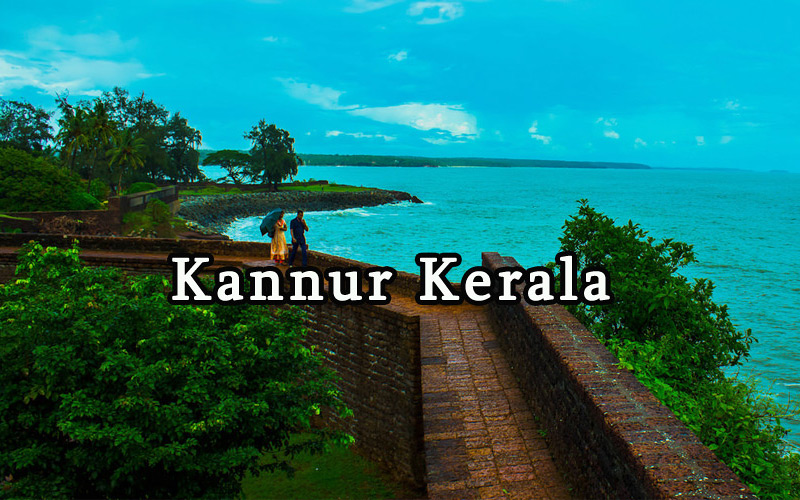

Theyyam are Hindu ritual practiced in northern Kerala and some parts of Karnataka. Theyyam is also known as Kaḷiyāṭṭaṁ or Tiṟa. Theyyam consists of traditions, rituals and customs associated with temples and sacred groves of Malabar.
"St. Angelo's Fort, popularly known as the Kannur Fort, is a massive triangular laterite fort and is among the most historic sites in Kannur. Constructed by the first Portuguese Viceroy, Don Francesco de Almeida in 1505, the fort is flanked by gigantic bastions that make for an imposing sight. "